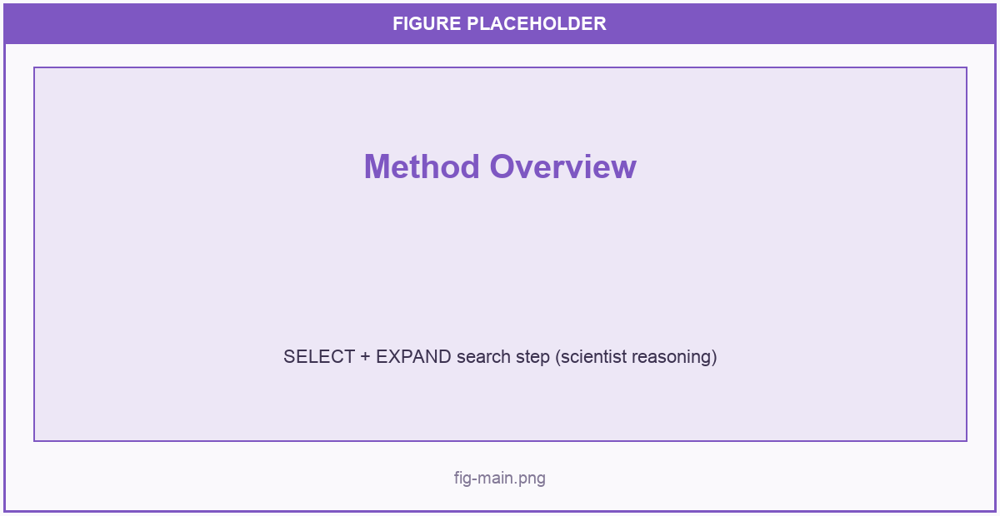
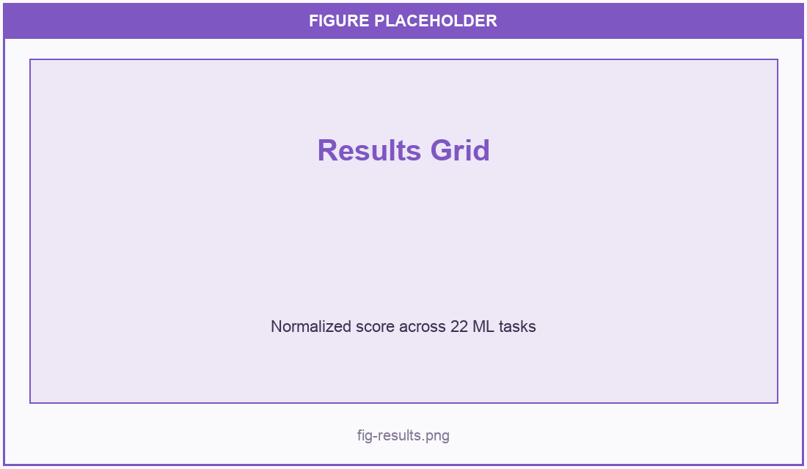
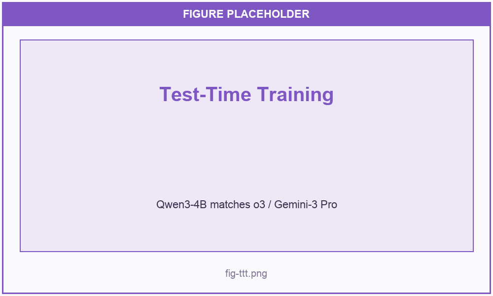
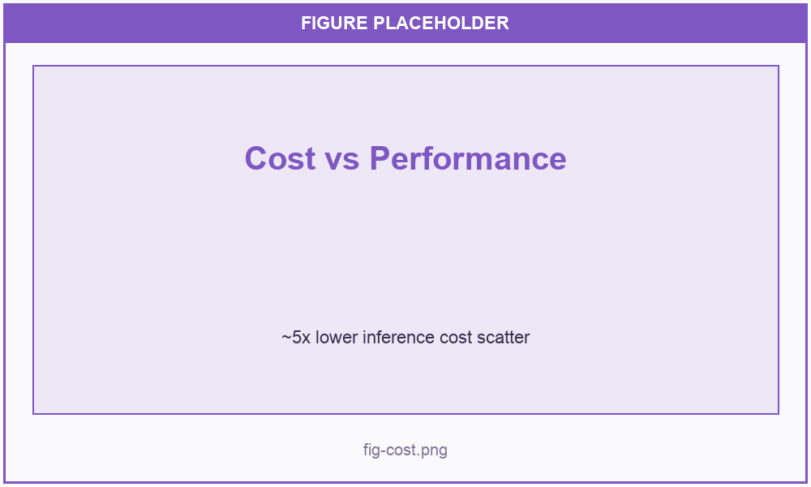
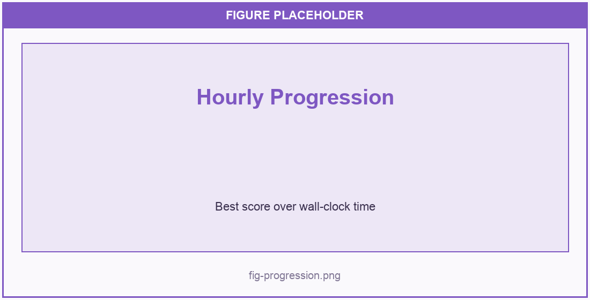
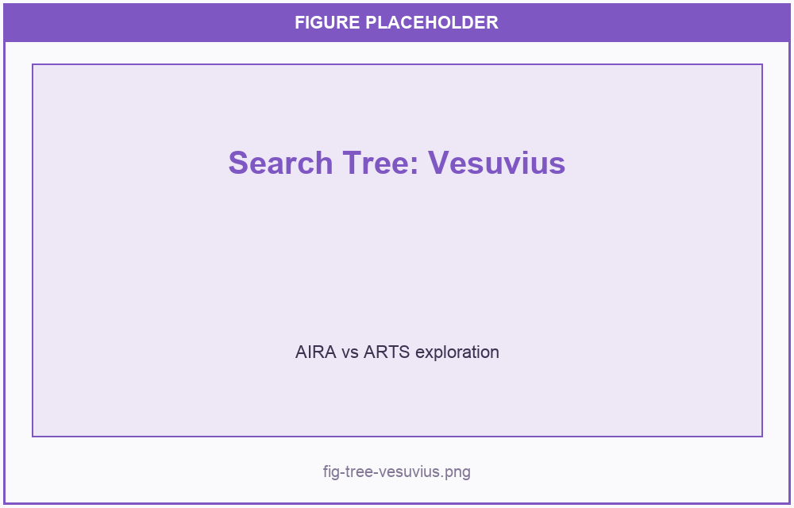
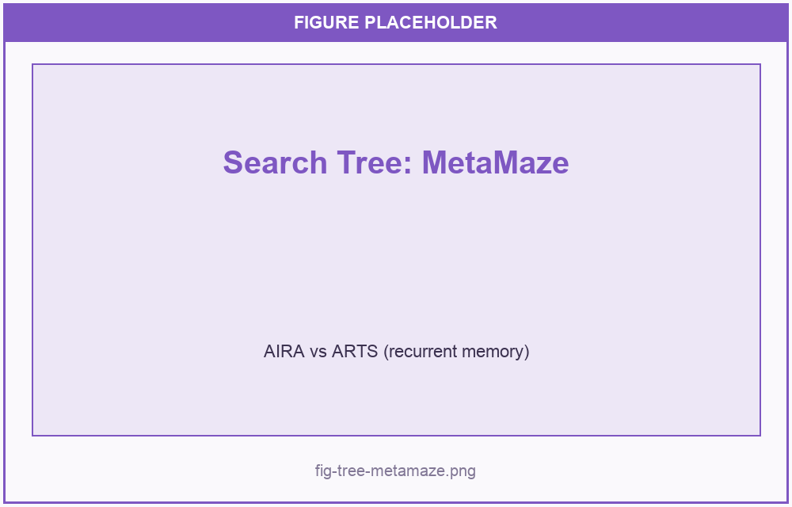

Learning the ARTS of Search
for Automated Discovery
1University of California, Santa Barbara · 2Université de Montréal & Mila – Quebec AI Institute
A reasoning LLM (the scientist) inspects logs and failures to reason about why a node scored low — instead of greedy, score-based selection — proposes diverse hypotheses via verbalized sampling, and learns the tree at test time, so a 4B model matches an o3-scale model at ~5× less cost.

Abstract
Scientific discovery can be formulated as an iterative search process over the space of hypotheses and experiments. Contemporary methods automate discovery by searching this space with heuristics such as MCTS. These algorithms conflate the merit of a hypothesis with the quality of its experimental execution. A promising hypothesis with preliminary execution is therefore ranked below a modest hypothesis whose execution is refined. Moreover, prior methods prune the search logs as the search progresses because the accumulated history outgrows the context window. We propose Agentic Reasoning for Tree Search (ARTS), a method for navigating this space where a reasoning language model selects hypothesis to explore next. The model uses tools to inspect prior execution logs and diagnose whether earlier failures arose from faulty implementations or bad hypotheses. To mitigate challenges with context length, ARTS uses test-time training to instill the knowledge of search tree in the model weights. Across 22 tasks from MLGym and MLEBench, we show that ARTS outperforms leading algorithms, with over 15.3% relative improvement in the normalized score. With test-time training we show that a Qwen3-4B agent can match performance with closed-source frontier models like Gemini-3 Pro and GPT o3-reasoning with up to 5× lower inference cost. We further observe that on partially observable RL tasks, the test-time trained Qwen3-4B scientist surpasses ARTS with the o3 scientist by rediscovering the human-best recurrent-memory solution that heuristic methods prune away.
Method
1. Inspect failures, don't just trust the score
Heuristic searches like MCTS conflate hypothesis quality with execution quality: a strong idea with a rough first implementation is ranked below a mediocre idea that happens to be polished. ARTS instead gives a reasoning model tools to inspect prior execution logs and diagnose why a node scored low — distinguishing a faulty implementation from a genuinely bad hypothesis before deciding what to explore next.
2. Reasoning-based selection over greedy heuristics
Rather than greedily following the highest score, the scientist reads code, logs, failures and scores across the tree and reasons about which direction is most worth pursuing. This lets it revisit and refine promising-but-underdeveloped branches that score-greedy methods would abandon.
3. Diverse hypotheses via verbalized sampling
Reasoning models driving these searches tend to suffer from diversity collapse. ARTS uses verbalized sampling to elicit a varied set of candidate hypotheses at each expansion, keeping the search broad enough to escape local optima while remaining grounded in the evidence from prior runs.
4. Test-time training to remember the tree
As the search grows, the accumulated history outgrows the context window; prior methods summarize or prune it and lose information. ARTS instead uses test-time training to instill the knowledge of the search tree directly into the model's weights. This lets a small Qwen3-4B scientist match closed-source frontier models at a fraction of the inference cost — and, on partially observable RL tasks, even rediscover human-best solutions that heuristic methods prune away.
Results






BibTeX
@article{juneja2026arts,
title = {Learning the ARTS of Search for Automated Discovery},
author = {Juneja, Gurusha and others},
journal = {Preprint},
year = {2026}
}